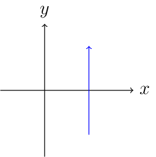
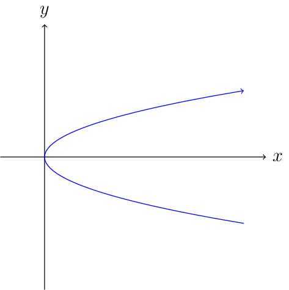

Integrais¶
Arcos¶
Um arco é um conjunto de pontos dados de forma paramétrica
onde
é uma função contínua. A representação paramétrica \(z=z(t)\) confere a \(C\) um sentido de percurso: à medida que o parâmetro \(t\) varia em \([a,b]\), de \(a\) até \(b\), o ponto \(z(t)\) caminha sobre \(C\), de \(z(a)\) até \(z(b)\). Denotamos por \(-C\) ao arco \(C\) percorrido em sentido contrário, ou seja, dado pela pela parametrização
Como o que importa num arco \(C\) é o conjunto imagem da parametrização \(z=z(t)\), nós vemos que um mesmo arco pode ser apresentado por muitas parametrizações distintas uma da outra. Veja o caso do arco \(-C\) acima, que poderia também ter sido parametrizado pela função
Um arco simples é um arco cuja parametrização \(z=z(t)\) é uma função (contínua) injetiva: à medida que \(t\) varia em \([a,b]\), de \(a\) até \(b\), o ponto \(z(t)\) caminha em \(C\), de \(z(a)\) a \(z(b)\), passando em cada ponto de \(C\) uma única vez. Portanto, para que um arco não seja simples é necessário que ele contenha ao menos um ponto múltiplo: todo aquele para o qual existam \(a\leqslant t_1<t_2\leqslant b\) tais que \(z(t_1)=z(t_2)\). Um arco fechado é um arco em que \(z(a)=z(b)\). Uma curva de Jordan é um arco fechado \(C\) que à exceção de \(z(a)=z(b)\) não possui ponto múltiplos (em outras palavras, a restrição \(z=z\mid_{[a,b)}\), de \(z\) ao intervalo semi-aberto \([a,b)\subseteq[a,b]\), é uma função injetiva).
Nota
Não confunda arco fechado com conjunto fechado (no sentido topológico).
Exemplos¶
O segmento de reta

parametrizado por
\[z:[-1,1]\subseteq\mathbb{R}\longrightarrow\mathbb{C}, \quad t\longmapsto 1-it;\]A parábola

parametrizada por
\[z:[-3,3]\subseteq\mathbb{R}\longrightarrow\mathbb{C},\quad t\longmapsto t^2+it,\](observe que \(x(t)=t^2\), \(y(t)=t\) e, deste modo, que \(x=y^2\));
Teorema da Curva de Jordan¶
O Teorema da Curva de Jordan afirma que se \(\Gamma\subseteq\mathbb{R}^2\) é uma curva de Jordan então \(\mathbb{R}^2\setminus\Gamma\) é desconexo e consiste de duas compenentes, uma das quais é limitada pela curva.
Até recentemente eu nunca havia lido uma demonstração deste importante Teorema. Como diz Cortella, é tempo para o conhecimento!
Contornos¶
Chamamos contorno a um arco \(C\) cuja representação paramétrica \(z:[a,b]\subseteq\mathbb{R}\longrightarrow\mathbb{C}\) cumpra às seguintes condições:
\(z\) é contínua em \([a,b]\);
\([a,b]=[a_1,b_1]\cup\cdots\cup[a_n,b_n]\) onde \(n\in\mathbb{N}\) e
\[a=a_1<b_{i-1}=a_i<b_i=a_{i+1}<b_n=b,\]para todo \(i=2,\ldots,n-1\);
a restrição \(z=z\mid_{(a_i,b_i)}\) é uma função derivável e sua derivada \(z^\prime(t)\) é uma função contínua de \(t\) que não se anula em \((a_i,b_i)\), para cada \(i=1,\ldots,n\);
existem, são coincidentes e não nulas as derivadas laterais
\[z^\prime(b_{i-1}^-)= \lim\limits_{t\to b_{i-1}^-}\dfrac{z(t)-z(b_{i-1})}{t-b_{i-1}}= \lim\limits_{t\to a_i^+}\dfrac{z(t)-z(a_i)}{t-a_i}= z^\prime(a_i^+),\]para todo \(i=2,\ldots,n\).
Integrais de contorno¶
Seja
uma função contínua. A integral de \(F\) em \([a,b]\) é definida por
Deste modo, são imediatas as propriedades seguintes, válidas para abitrárias funções contínuas \(F,G:[a,b]\subseteq\mathbb{R}\longrightarrow\mathbb{C}\) e constante complexa \(c\in\mathbb{C}\):
\(\mathfrak{Re}\left(\int_a^bF(t)\,dt\right)=\int_a^b\mathfrak{Re}\left( F(t)\right)\,dt\,\,\,\mbox{e}\,\,\,\mathfrak{Im}\left(\int_a^bF(t)\,dt\right) = \int_a^b\mathfrak{Im}\left(F(t)\right)\,dt\);
\(\int_a^b\left(F(t)+c\,G(t)\right)\,dt=\int_a^bF(t)\,dt+c\int_a^bG(t)\, dt\);
Finalmente, caso \(\int_a^bF(t)\,dt\neq0\), escreva \(\int_a^bF(t)\,dt=re^{i\theta}\) (\(r>0\)) para concluir que
Se \(\int_a^bF(t)\,dt=0\) é claro que
Deste modo, é também verdade que:
\(\vert\int_a^bF(t)\,dt\vert\leqslant\int_a^b\vert F(t)\vert\,dt\),
para toda função contínua \(F:[a,b]\subseteq\mathbb{R}\longrightarrow\mathbb{C}\).
Sejam \(f:U\subseteq\mathbb{C}\longrightarrow\mathbb{C}\) uma função contínua e \(C\subseteq U\) um contorno qualquer no domínio de \(f\). Neste caso, definimos
onde
é uma arbitrária parametrização de \(C\). Se, por acaso, você estiver se perguntando
"Mas, e se eu utilizasse uma outra parametrização do mesmo caminho?"
fique tranquilo, pois você está coberto de razão! Acontece que o integrando à direita na igualdade que define a integral complexa é dado por
de onde segue que
pelo Teorema da mudança de variável para a integral de Riemann, válido para toda função derivável
cuja derivada \(t^\prime(\tau)\) seja uma função integrável a Riemann, o que expressa a invariância da integral em relação à parametrização utilizada. Podemos, assim, omitir a parametrização em uso sem com isso comprometermos o significado único e preciso atribuído a \(\int_Cf(z)\,dz\).